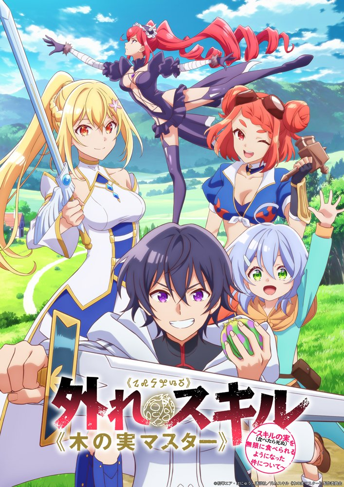
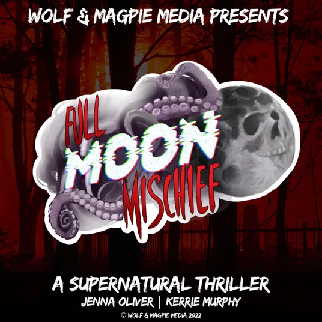

LET'S HEAR
WHAT I'VE GOT.
Two sides of character performance, ready to listen to right here. Choose a demo and stay awhile — no detours, no lost tabs.
Characters with a pulse.
Expressive, grounded, and built around the emotional truth of the scene.
Choose a demo to listen. Add Jackoby's approved audio files to assets/audio/ before launch.
SOME STORIES
ARE SUNG.
Music has been part of Jackoby's life since childhood. With more than two decades of singing experience, he brings a musician's ear for phrasing, breath, rhythm, and emotional detail to every performance.
From intimate expression to a voice that fills a room, singing is another way to explore what makes a story feel human.
ASK ABOUT SINGING & COLLABORATIONS ↗STORY
HISTORY.
A LOT OF VOICE.
OH, HÆ.
I'M JACKOBY.
Artist at heart. Storyteller by nature.
I'm Jackoby Clinton — a voice actor, singer, and vocal instructor with a lifelong love of performance. Whether I'm stepping into a character, shaping a musical phrase, or helping a student find their voice, I'm drawn to the same thing: honest expression and human connection.
My Icelandic family roots are an important part of my story. The country's traditions of poetry, music, and oral storytelling have helped shape my appreciation for the voice as something more than sound — it's a way to carry memory, feeling, and meaning from one person to another.
That curiosity has also led me to pursue advanced training in the Icelandic skaldic tradition. I bring that respect for craft and storytelling into the work I do today.
Stories I've Voiced.
Different worlds, unforgettable characters, and voices brought to life through performance.
CREDITS
The Exiled Heavy Knight Knows How to Game the System (2026)
An English-dub performance bringing Arus to life in this fantasy anime adventure.
Explore IMDbThe Laid-Off Cheat-Granting Mage Enjoys a Second Lease on Life
Additional Voices · Voice Actor (English Dubbed)

Bogus Skill 'Fruitmaster'
Character Name · Voice Actor (English-Dubbed)

All Moon Mischief
Jón Ölvirsson · Voice Actor
Every voice opens a door to another world.
BUILT ON
THE BASICS.
Good performance starts with listening. Technique matters, preparation matters, and so does leaving enough room for a surprising, truthful choice.
For casting teams, Jackoby aims to bring a collaborative attitude, thoughtful interpretation, and a willingness to explore the direction that best serves the project.
Character-first reads
Emotion and intention before affectation.
Open to direction
Curiosity, flexibility, and clear communication.
A trained ear
Breath, rhythm, and phrasing informed by singing.
Meaning in every line
Finding the human detail that makes a scene land.
HAVE A STORY?
LET'S GIVE IT A VOICE.
Have a role, a song, or a creative collaboration in mind? Send over a few details about the project and what you're looking for. I'd love to hear what you're building.
For casting, singing, and professional inquiries, email is a great place to start.